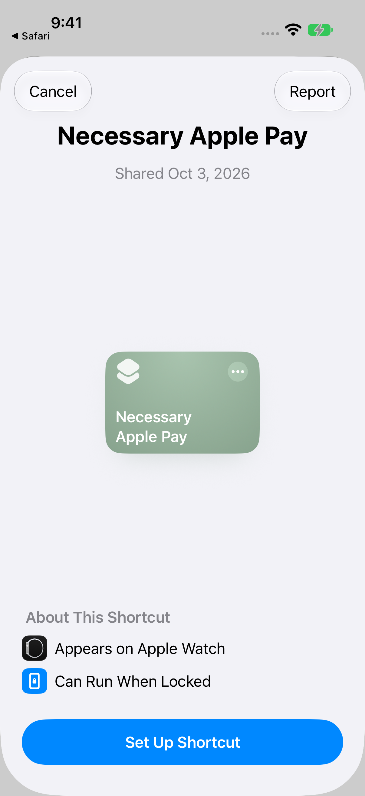
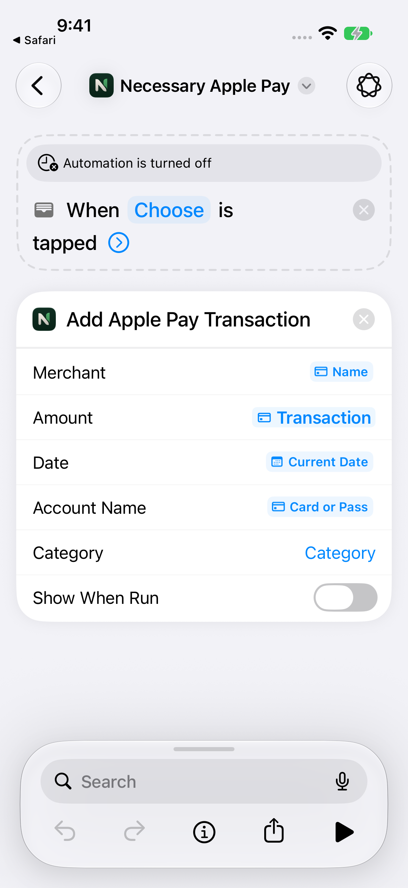
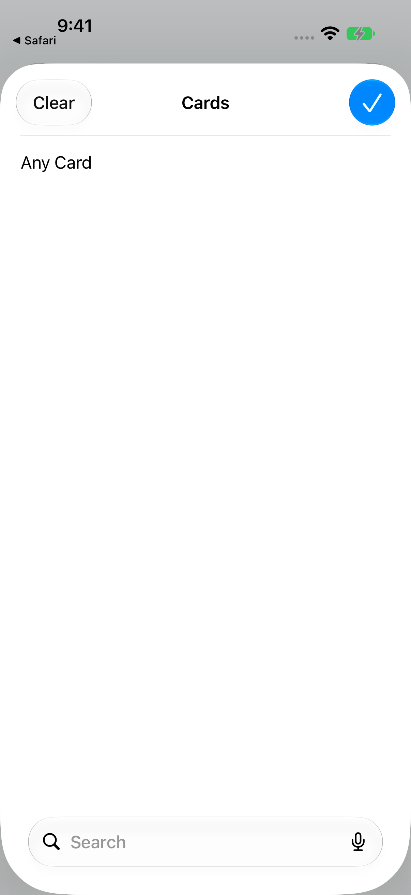
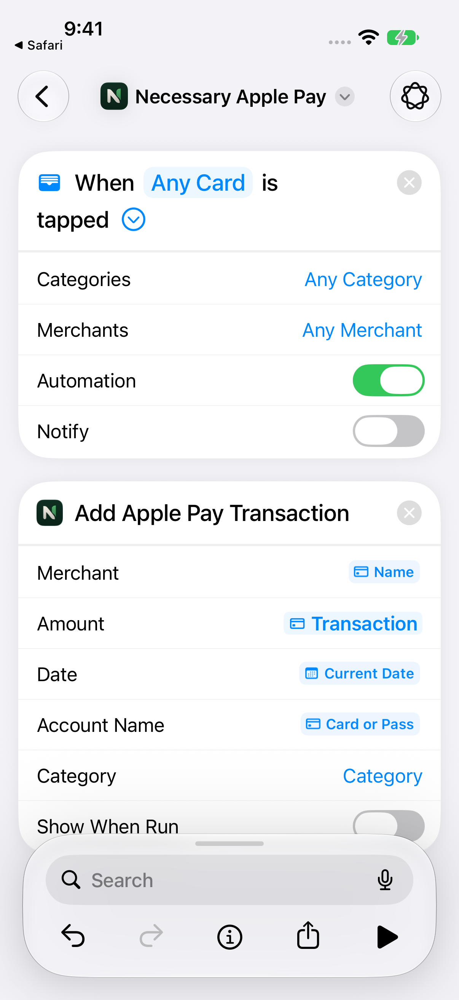

Tap to pay.
Ready to review.
Send Apple Pay purchases to your signed-in Necessary account using a Wallet automation in Shortcuts.
Install Necessary and sign in first. The shortcut is free and does not contain a connection key or saved payment cards.
Watch the setup
A one-minute walkthrough recorded in the iOS 27 iPhone simulator. It uses Any Card; on your iPhone, you can choose specific cards instead.
Download video · Enable captions in the player for step-by-step prompts.
Set up on iOS 27
- Download the shortcut. Tap Download shortcut above. If Safari asks, confirm the download, then open the downloaded file from Safari’s downloads or Files.
- Open it in Shortcuts. Tap Set Up Shortcut, then Skip Setup to add it with the automation turned off.
- Edit the automation. Open Necessary Apple Pay and tap Editor if the description view appears. In the “When Cards is tapped” row, choose your cards or Any Card, then tap Done.
- Enable it. Expand the Wallet trigger with its arrow, then turn on Automation. Tap Back when you’re done; Shortcuts saves the changes.
- Check a purchase. Make a small Apple Pay purchase and open Necessary to confirm the transaction appears for review.








What gets sent?
The shortcut passes the transaction’s name and amount, the card name, and the current date. Wallet may leave out details for some purchases or preauthorizations. Necessary skips events without a merchant; purchases without an amount wait for you to enter it in the app.
Using iOS 26 or earlier?
Create the automation manually in Shortcuts instead of importing its automation from the file.
- In Shortcuts, open Automation, tap +, and choose the Wallet transaction trigger.
- Select your cards and choose Run Immediately.
- Add Necessary’s Add Apple Pay Transaction action.
- Fill Merchant and Amount using the Wallet transaction’s properties. Use Current Date for Date and the card name for Account Name.
- Save it and check a small purchase in Necessary.
Already have the shortcut?
Downloading a new copy does not update an existing automation automatically. Update or replace your existing setup, and leave only one automation enabled to avoid duplicate imports.
Need help? Visit support.